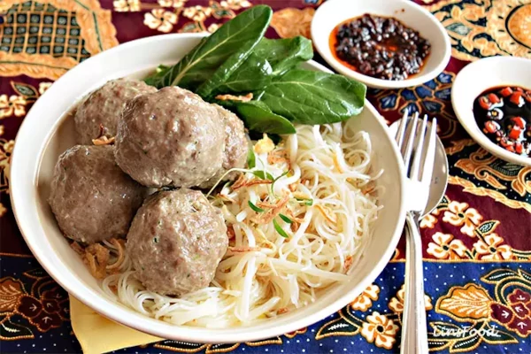

Indonesian Bakso

Bakso is one of the famous Indonesian food. In this country bakso is
street food, although you find the bakso as frozen food.
Ingredients
- 750 gr ground beef
- 3 onions garlic
- 1 knob garlic
- 3 tsp white pepper powder
- 2 tsp cracked black pepper
- 1 tbsp salt
- 6 tbsp tapioca flour
- 2 eggs
- 1 tsp baking powder
- 1 cup ice cubes
- 1/2 cup water
Noodles and Soup ( 3 people )
- 150gr beef fat
- 3 packets noodle
- 4 stalks spring onions
- 2 cloves garlic
- 1 cm ginger
- 1 tsp white pepper powder
Cooking Instructions
-
Bakso / Meatballs:
Slices the onion and fry till the onion color turned brown. Fry the
garlic half cook. 5/6 part fried onion for the blender ingredients and
the rest for the topping for serving.
-
Blender all the ingredients till it becomes a dough. Boil the water in
a saucepan. Once the water is boiled shape the dough using two spoons,
make a ball and boil it.
-
Meatballs are ready when it floating in the water. Take out the
meatballs and drain it. Keep it in the freezer as frozen food. Use it
when you want to use it.
-
Noodles and Soup:
Put the beef fat, smashed garlic, and ginger, white pepper in the
remaining boiled meatballs water.
-
Boild the soup till the beef fat is ready. Then boild the noodle and
rinse it, arrange the noodles in the bowl.
-
Add bok coy, chopped spring onions, fried onion, and meatballs at the
top then put the soup.
-
Bakso or Indonesian meatballs are ready to serve add with sriracha and
sweet soy sauce to add deliciousness.